Scan to
follow along
Open today's slides on your own phone or laptop.
Scan the code, or type the link below.

📱 Point your camera here
You are about to become a programmer
By the end of today, you will have written, changed, and run real programs — right here in these slides.
By the end of the course, you will have built a complete, working application of your own.
Where we're going — all 10 lectures

…and the second half

What you'll build
Every lecture adds one piece to a real project. Pick a track:
Study Buddy
A tool for students: track subjects, log study hours, record grades, see your progress.
Teacher Gradebook
A tool for teachers: manage a class, record scores, compute averages, find top students.
Watch a little, code a lot
See
Short explanations with clear examples — never long lectures.
Try
Live code boxes right in the slides. You edit, you run, you see output.
Build
Small challenges and a mini-project you finish with a partner.
Three rules for a great class
Ask anything, anytime
If you're confused, five others are too. There are no silly questions here.
Errors are normal and good
Every programmer sees errors constantly. They are hints, not failures.
Help the person next to you
Explaining something is the fastest way to truly learn it.
A program is a set of instructions
A program tells a computer exactly what to do — step by step, in order.
The computer is fast and obedient — but it does exactly what you say, not what you meant.
Why a language?
Computers don't understand English. A programming language is a precise way to write instructions a machine can follow.
You write
Human-readable code, in C++.
Compiler translates
Into instructions the machine runs.

Computer runs
Executes them, step by step.
Three steps, every time

1 · Write
Save your code in a .cpp file.
2 · Compile
Translate it into an executable.
3 · Run
Launch it and see the output.
Why learn C++?
Fast and powerful
Games, operating systems, browsers, embedded devices, scientific computing.
Teaches how computers really work
Concepts here transfer to every other language.
Strong foundations
After C++, Java, C#, and Python feel familiar.
Which of these use C++?
"Hello, World!"
#include <iostream>
int main() {
std::cout << "Hello, World!" << std::endl;
return 0;
}The #include line
#include <iostream>This loads a library — ready-made code. iostream gives us input and output tools (the "io").
The main function
int main() {
// your instructions go here
}Every program starts at main — the front door. The braces { } hold everything it does.
Printing with cout
std::cout << "Hello, World!" << std::endl;std::cout
The output stream — the screen.
<<
Sends what's on the right into cout.
std::endl
Ends the line (newline after).
Two vital small rules
return 0; means "finished successfully"
Tells the system the program ended with no errors.
Every statement ends with ;
The semicolon is how C++ knows one instruction has finished. Forgetting it is the #1 beginner slip.
Run your first program
Click ▶ Run. Then change the words inside the quotes and run again.
A small shortcut: using namespace std;
In the live box we wrote cout, not std::cout. The line using namespace std; lets us drop the std:: prefix.
What does this print?
cout << "C" << "+" << "+";
cout << " is fun";Chaining with <<
cout << "Hello" << ", " << "World" << "!" << endl;Send several pieces in one line. They print left to right, joined together.
New lines & special characters
endl
Move to a new line.
\n
Also a new line, inside quotes.
\t
Insert a tab space.
cout << "Line one\nLine two\tTabbed" << endl;Make it print your way
Run it. Then try: add a \n, add a \t, print three lines about yourself.
Leaving notes: comments
// A single-line comment — the computer ignores it
cout << "Hi"; // comments can sit after code too
/* A multi-line
comment */Comments are for humans. The compiler skips them. Use them to explain why.
What's missing?
Three blanks turn this into a working program. Call them out.
using namespace std;
int ____() {
cout << "Done!" << endl_
return 0;
}
Reading input with cin
char name[40];
cout << "What is your name? ";
cin >> name;
cout << "Hello, " << name << "!";cin >>
Reads what the user types into a variable.
The arrows flip
cout << sends out · cin >> brings in.
Greet the user by name
The input box is pre-filled with a sample name. Run it — then change the greeting and run again.
Add a second question
The program reads a name and a favorite number. Make it also print the number doubled. (Hint: num * 2)
Three errors you will meet
Missing ;
"expected ';'" — add the semicolon.
Mismatched { }
Every opening brace needs a closing one.
Typo in a name
cot instead of cout.
Cause an error on purpose
Run it (works). Now delete the semicolon after the first line and run again. Read the error. Then put it back.
How real programmers debug
Read the message
It usually names the line and the problem.

Fix one thing, run again
Small steps beat big guesses.
Repeat calmly
Every bug you fix makes you faster.
Where does a C++ program start?
What ends almost every statement?
Which sends text to the screen?
Your intro card
You just built your project's welcome screen
That intro card is exactly how the Study Buddy and Gradebook projects begin — a header that greets the user.
What you learned today
Concepts
A program is precise instructions; a language + compiler turns them into something that runs.
Skills
You wrote, ran, broke, and fixed real C++ — and printed your own output with cout.
Today's vocabulary
#include
Load a library
main
Where it starts
cout
Print to screen
cin
Read input
;
Ends a statement
{ }
Group of code
endl
New line
//
A comment
Practice (15–20 min)
Write three small programs
A short poem, your three favorite foods, and a picture made from text symbols.
Break one on purpose
Remove a ;, read the error, put it back.
Save everything
Start a folder for your code — your growing library.
Lecture 2 — Variables & Data Types
Today you printed fixed text. Next time your programs will remember things and work with real data.
- Store numbers, text, and more in variables
- Proper text with string
- Make the intro card ask for the user's real name